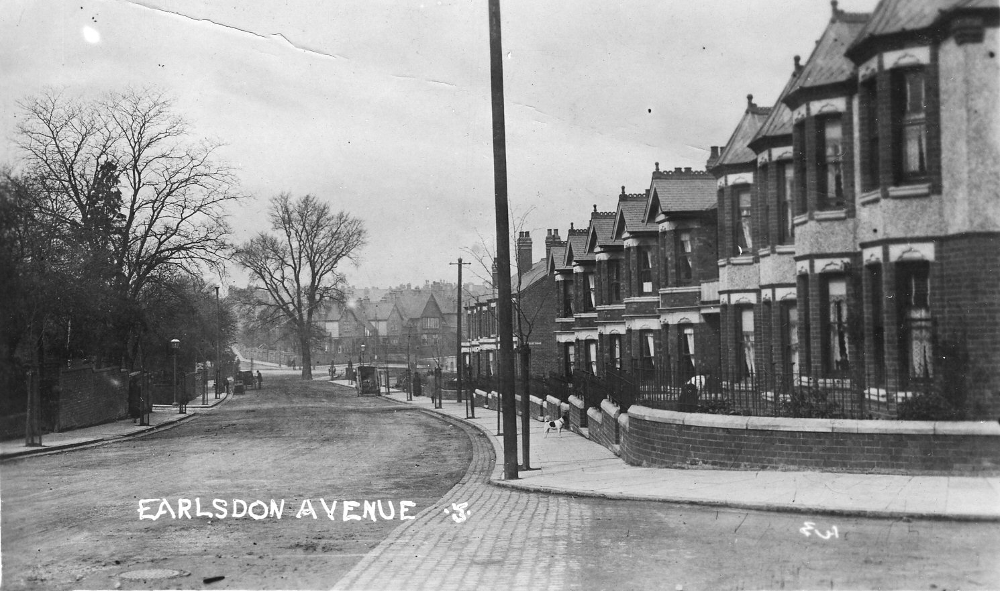
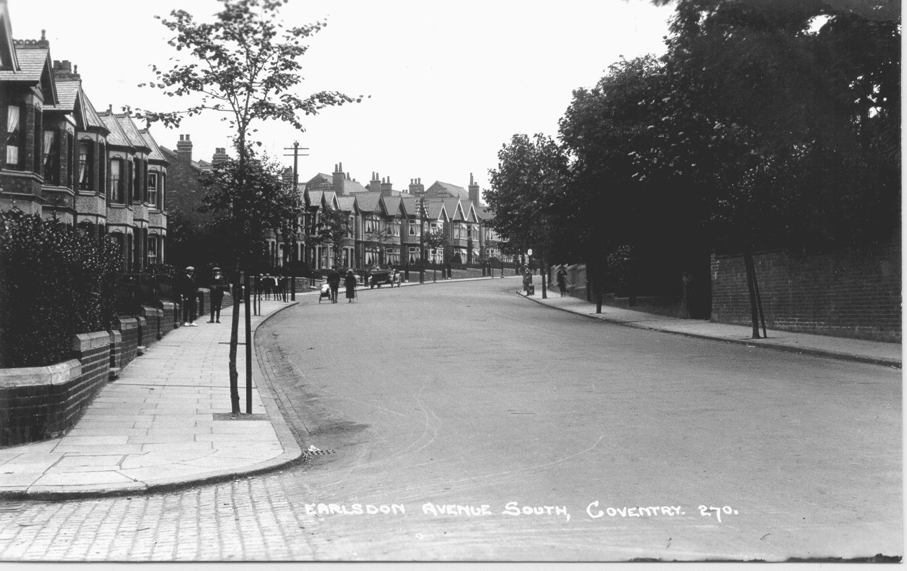
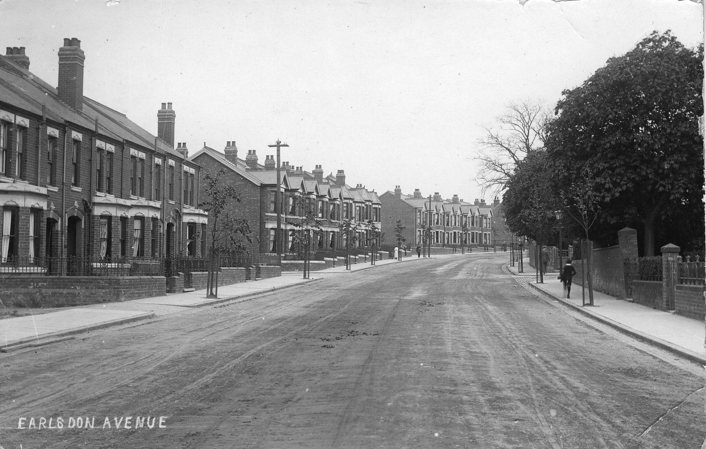

Earlsdon Avenue South (Formerly Earlsdon Lane)
Earlsdon Lane (or Elsdon Lane) was originally a winding gated lane. The gate in the picture above once stood in Earlsdon Lane, on the boundary between Earlsdon and the Gregory Estate. It was located close to the existing disused drinking fountain at the junction of the Firs and the footpath to Morningside. The house close to this spot, on the corner of Belvedere Road, is in fact called 'Gate House'. This view is looking towards Earlsdon along Earlsdon Lane (now Earlsdon Avenue South). Before the construction of Albany Road, this and the opposite route via Hearsall Common, were the only access for horse drawn vehicles between Earlsdon and Coventry.  By the start of the 20th century it was being rapidly developed as the leafy suburb we know today. By the time these pictures were taken the development of Earlsdon Avenue South was complete. Narrow Earlsdon Lane is now more like a broad boulevard, neatly kerbed and pavemented, guttered and drained.  Similarly Berkeley Road North, immediately to the left and Mayfield Road in the middle distance to the left have also been fully developed. The visual interest lives on in the historic curves of the road. Still only one parked car and pedestrians can still choose to use the road instead of the pavement if they so wish!  |